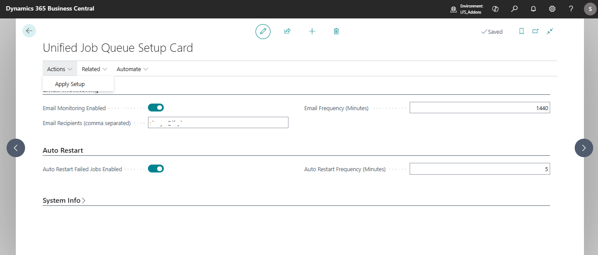
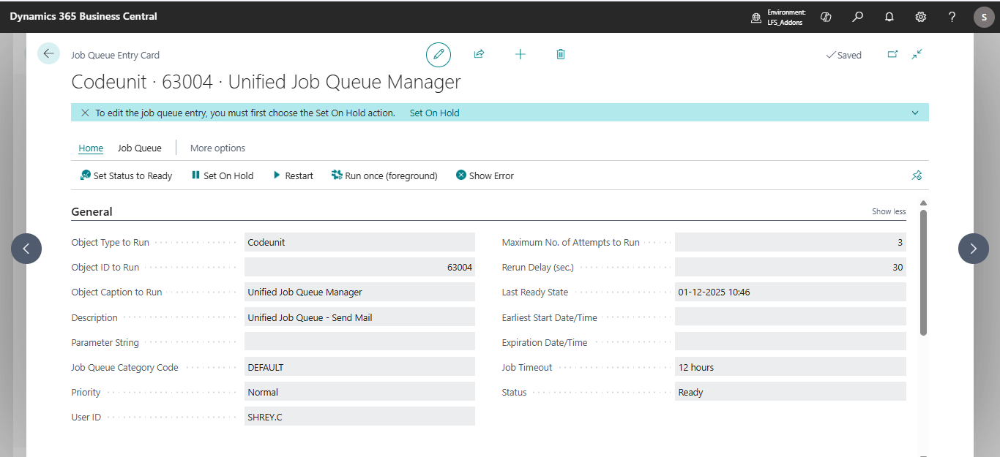
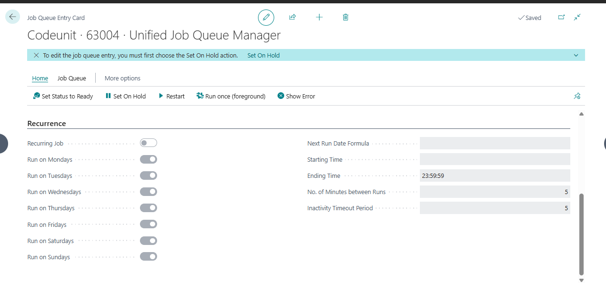
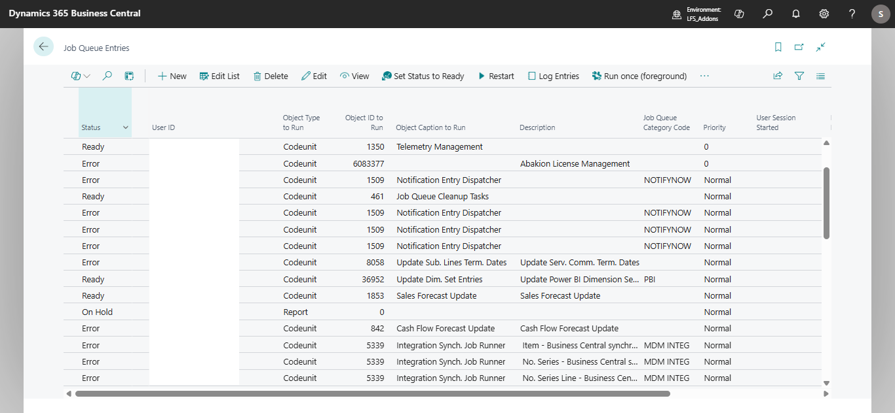
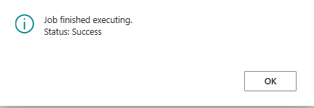
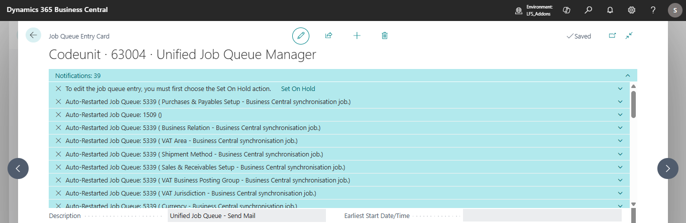
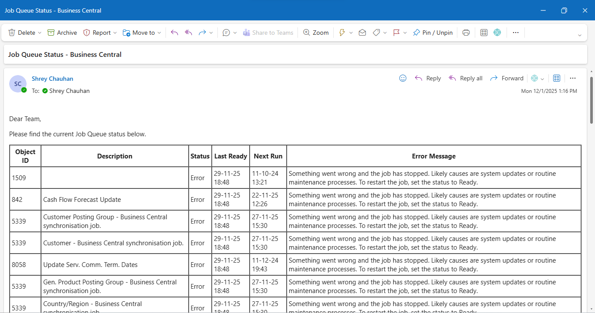
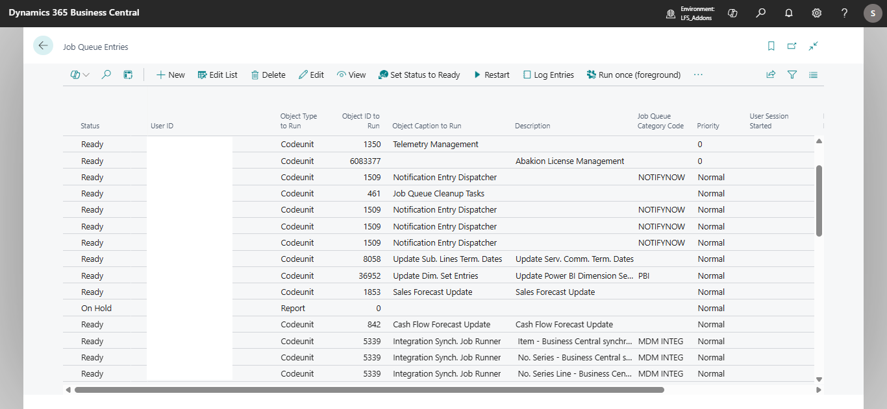

🚀 Automating Job Queue Monitoring in Business Central (AL Code + Assisted Setup + Scheduling)
Complete Guide with Auto-Restart, Email Alerts & Default Job Queue Creation
Business Central’s Job Queue system is powerful but often under-used. Many organizations struggle with:
✔ Jobs failing without anyone noticing
✔ Manual restarts
✔ No automated reporting
✔ No configuration UI for non-technical users
So in this project, we built a Unified Job Queue Manager module that combines:
- 🔄 Auto-Restart of Failed Job Queue Entries
- ✉️ Email Notification of Job Queue Status
- ⚙️ Automatic Creation of Default Job Queue Entries
- 🧩 Assisted Setup Wizard for Non-Technical Users
- 📅 Automatic Scheduling of Jobs via Job Queue
- 🔐 Permissionset for Secure Access
All logic is packaged into a clean AL extension.
🧱 Architecture Overview
┌──────────────────────────────────────────┐
│ Unified Job Queue Setup (Table 80001) │
│ - Email settings │
│ - Monitoring frequency │
│ - Auto-restart frequency │
│ - Default job queue creation flag │
└──────────────────────────────────────────┘
│
▼
┌──────────────────────────────────────────┐
│ Assisted Setup Page (80002) │
│ User chooses: │
│ ✔ Email alerts │
│ ✔ Frequency │
│ ✔ Auto-restart │
└──────────────────────────────────────────┘
│
▼
┌──────────────────────────────────────────┐
│ Job Queue Setup Handler (CU 80003) │
│ - Creates job queue entries │
│ - Updates schedule │
│ - Applies settings │
└──────────────────────────────────────────┘
│
▼
┌──────────────────────────────────────────┐
│ Unified Job Queue Manager (CU 80000) │
│ - Sends email report │
│ - Auto-restarts jobs │
│ - Helper: CreateJobQueue │
└──────────────────────────────────────────┘
✨ Key Features
1. Auto-Restart Failed Job Queue Entries
A background job checks for entries with Status = Error, clears error message, resets to Ready, and sends a notification.
2. HTML Email Summary of Job Queues
A scheduled codeunit sends a table-format HTML email showing:
- Object ID
- Description
- Status
- Last Ready Time
- Earliest Start Date/Time
Useful for finance/operations teams.
3. Automatic Job Queue Creation
The system auto-generates standard job queue entries on install or via setup:
- Auto Restart Job
- Email Monitoring Job
- Custom modules (Get Grants Job, Get Batch Job, etc.)
4. Assisted Setup Wizard
A guided configuration page allows non-technical users to:
- Enable/Disable email monitoring
- Enter email recipients
- Set frequency
- Enable/Disable auto-restart
- Apply the configuration
5. Scheduling Support
The system registers job queue entries automatically based on setup values.
6. Permissions
A custom permissionset controls access to setup and codeunits.
📝 Real Business Scenario
Imagine a company where Job Queues regularly fail:
- Integration jobs
- E-Invoice processing
- EXIM processing
- Posting jobs
- Custom automations
Without monitoring, these failures can halt operations.
With this module:
✔ Admins get daily status email
✔ Jobs auto-restart
✔ No error goes unnoticed
✔ Everything configurable from Assisted Setup
📌 How It Works (Step-by-Step)
➡ Step 1 – User opens Assisted Setup
From role center:
Assisted Setup → Unified Job Queue Setup
User configures:
- Daily Email Report → Enabled
- Email Frequency → 1440 mins
- Auto-Restart Failed Jobs → Enabled
- Restart Frequency → 5 mins
➡ Step 2 – System creates Job Queue Entries
Examples:
- CU 80000 → SendMail
- CU 80102 → AutoRestart
- Any custom jobs you want
➡ Step 3 – Email arrives daily
Containing a neatly formatted table showing all job queues and their status.
➡ Step 4 – Failed Jobs Auto-Restart
Every 5 minutes, the system auto-clears and restarts failed entries.
📷 Screenshots in this Module
You referenced these images:
📌 SendMail HTML Email Job
(Displays job queue entries inside a table)
📌 Create Default Job Queue Entries
(Creates a predefined list on installation)
📌 Auto Restart Job Queue Codeunit
(Resets status & sends notification)
All these are integrated into one unified module in the final code unit.
🎯 Benefits for Clients / End-Users
Feature | Benefit |
Auto Restart | Zero manual intervention |
Email Alerts | Visibility of Job Queue health |
Assisted Setup | Non-technical configuration |
Auto Scheduling | Hassle-free monitoring |
Permissionset | Secure access control |
Centralized Manager | Single place to manage everything |
📦 Deployment Strategy
- Add extension to sandbox
- Run Assisted Setup
- System automatically schedules jobs
- Verify email alerts
- Monitor auto-restart in notification area
🎉 Final Result
You now have a complete Job Queue Monitoring Framework inside Business Central with:
✔ Auto Fix
✔ Auto Notify
✔ Auto Schedule
✔ Auto Create
✔ Assisted Setup
✔ PermissionControl
1. Unified Job Queue Setup Card
This page stores configuration values related to monitoring, email alerts, auto-restart, and schedules.

Screenshot 1 — Unified Job Queue Setup Card
2. Unified Job Queue Manager – Scheduled Background Execution
After applying setup, the system generates a Job Queue Entry that periodically executes monitoring logic.


Screenshot 2 — Job Queue Entry (Unified Job Queue Manager)
3. Viewing the Complete Job Queue List
The monitoring engine reads Job Queue Entry data to analyze status, timings, and errors.

Screenshot 3 — Job Queue Entries Overview
4. Auto-Restart Job Queue Logic
If auto-restart is enabled, failed jobs are automatically restarted and errors cleared.


Screenshot 4 — Auto Restart Notifications
5. Email Output — Consolidated Job Queue Report
A scheduled email provides a report of all job queues including status and last run times.

Screenshot 5 — Job Queue Email Report
6. Updated Job Queue List After Auto-Restart
Jobs restarted by the auto-restart function appear updated in the Job Queue list.

Screenshot 6 — Updated Job Queue Entries After Restart
Code :
table 63002 "Unified Job Queue Setup"
{
fields
{
field(1; Code; Code[20])
{
Caption = 'Code';
DataClassification = SystemMetadata;
}
field(2; "Email Monitoring Enabled"; Boolean)
{
Caption = 'Email Monitoring Enabled';
DataClassification = ToBeClassified;
}
field(3; "Email Recipients"; Text[250])
{
Caption = 'Email Recipients (comma separated)';
DataClassification = ToBeClassified;
}
field(4; "Email Frequency Minutes"; Integer)
{
Caption = 'Email Frequency (Minutes)';
DataClassification = ToBeClassified;
}
field(5; "AutoRestart Enabled"; Boolean)
{
Caption = 'Auto Restart Failed Jobs Enabled';
DataClassification = ToBeClassified;
}
field(6; "AutoRestart Frequency Minutes"; Integer)
{
Caption = 'Auto Restart Frequency (Minutes)';
DataClassification = ToBeClassified;
}
field(7; "Create Default Job Queues"; Boolean)
{
Caption = 'Create Default Job Queue Entries';
DataClassification = ToBeClassified;
}
field(8; "Last Applied"; DateTime)
{
Caption = 'Last Applied';
DataClassification = ToBeClassified;
}
}
keys
{
key(Key1; Code) { Clustered = true; }
}
trigger OnInsert()
begin
// default values for first record
"Email Monitoring Enabled" := true;
"Email Frequency Minutes" := 1440; // daily
"AutoRestart Enabled" := true;
"AutoRestart Frequency Minutes" := 5; // every 5 minutes
"Create Default Job Queues" := true;
"Last Applied" := CurrentDateTime();
end;
}
namespace ALProject.ALProject;
page 63006 "Unified Job Queue Setup Card"
{
ApplicationArea = All;
Caption = 'Unified Job Queue Setup Card';
PageType = Card;
SourceTable = "Unified Job Queue Setup";
UsageCategory = Administration;
layout
{
area(Content)
{
group(EmailMonitoring)
{
Caption = 'Email Monitoring';
field("Email Monitoring Enabled"; Rec."Email Monitoring Enabled") { ApplicationArea = All; }
field("Email Recipients"; Rec."Email Recipients") { ApplicationArea = All; ToolTip = 'Comma separated emails (e.g. ops@contoso.com)'; }
field("Email Frequency Minutes"; Rec."Email Frequency Minutes") { ApplicationArea = All; }
}
group(AutoRestart)
{
Caption = 'Auto Restart';
field("AutoRestart Enabled"; Rec."AutoRestart Enabled") { ApplicationArea = All; }
field("AutoRestart Frequency Minutes"; Rec."AutoRestart Frequency Minutes") { ApplicationArea = All; }
}
group(System)
{
Caption = 'System Info';
field("Last Applied"; Rec."Last Applied") { ApplicationArea = All; Editable = false; }
}
}
}
actions
{
area(processing)
{
action(ApplySetup)
{
Caption = 'Apply Setup';
Image = Play;
ApplicationArea = All;
trigger OnAction()
var
SetupHandler: Codeunit "Job Queue Setup Handler";
begin
CurrPage.SaveRecord();
SetupHandler.ApplySetup();
Message('Setup applied and job queue entries updated.');
end;
}
}
area(navigation)
{
action(AssistedSetup)
{
Caption = 'Open Assisted Setup';
Image = Help;
ApplicationArea = All;
trigger OnAction()
begin
Page.Run(Page::"Unified Job Queue Assisted Set");
end;
}
}
}
}
codeunit 63004 "Unified Job Queue Manager"
{
Subtype = Normal;
SingleInstance = true;
trigger OnRun()
begin
ExecuteFromJobQueue(true, true);
end;
// Public method to run by Job Queue Entry – wrapper that calls SendMail and/or AutoRestart depending on parameters
procedure ExecuteFromJobQueue(RunMail: Boolean; RunAutoRestart: Boolean)
var
SetupRec: Record "Unified Job Queue Setup";
begin
// read setup record
if not SetupRec.Get('') then
exit;
if RunMail and SetupRec."Email Monitoring Enabled" then
SendMail(SetupRec."Email Recipients");
if RunAutoRestart and SetupRec."AutoRestart Enabled" then
AutoRestartJobQueues();
end;
// Sends HTML email summary for job queues (recipients is CSV of emails)
// Sends HTML email summary for job queues (recipients is CSV of emails)
procedure SendMail(Recipients: Text)
var
JobQueue: Record "Job Queue Entry";
EmailMessage: Codeunit "Email Message";
Email: Codeunit Email;
EmailAccount: Record "Email Account";
ToList: List of [Text];
CCList: List of [Text];
BccList: List of [Text];
RecipientsTemp: Text;
Pos: Integer;
ItemText: Text;
SenderEmail, Description : Text;
begin
// Hard-coded sender email
SenderEmail := 'shrey.c@lfspl.com';
// Build ToList from comma-separated list
RecipientsTemp := Recipients;
while StrLen(RecipientsTemp) > 0 do begin
Pos := StrPos(RecipientsTemp, ',');
if Pos = 0 then begin
ItemText := DelChr(RecipientsTemp, '=', ' ');
ToList.Add(ItemText);
break;
end else begin
ItemText := DelChr(COPYSTR(RecipientsTemp, 1, Pos - 1), '=', ' ');
ToList.Add(ItemText);
RecipientsTemp := COPYSTR(RecipientsTemp, Pos + 1);
end;
end;
// Fallback default email
if ToList.Count = 0 then
ToList.Add('shrey.c@lfspl.com');
// Get default email account
// EmailAccount.GetDefaultAccount();
// Create the HTML email
EmailMessage.Create(ToList, 'Job Queue Status - Business Central', '', true, CCList, BccList);
// Email Body
EmailMessage.AppendToBody('<p>Dear Team,</p>');
EmailMessage.AppendToBody('<p>Please find the current Job Queue status below.</p>');
EmailMessage.AppendToBody('<table border="1" cellpadding="4" cellspacing="0">');
EmailMessage.AppendToBody('<tr><th>Object ID</th><th>Description</th><th>Status</th><th>Last Ready</th><th>Next Run</th><th>Error Message</th></tr>');
JobQueue.SetRange("Object Type to Run", JobQueue."Object Type to Run"::Codeunit);
JobQueue.SetRange(Status, JobQueue.Status::Error);
if JobQueue.FindSet() then
repeat
if JobQueue.Description = '' then
Description := JobQueue."Object Caption to Run"
else
Description := JobQueue.Description;
EmailMessage.AppendToBody('<tr>' +
'<td>' + Format(JobQueue."Object ID to Run") + '</td>' +
'<td>' + Description + '</td>' +
'<td>' + Format(JobQueue.Status) + '</td>' +
'<td>' + Format(JobQueue."Last Ready State") + '</td>' +
'<td>' + Format(JobQueue."Earliest Start Date/Time") + '</td>' +
'<td>' + Format(JobQueue."Error Message") + '</td>' +
'</tr>');
until JobQueue.Next() = 0;
EmailMessage.AppendToBody('</table>');
EmailMessage.AppendToBody('<p>Regards,<br/>Automated Job Queue Manager</p>');
// Send using standard Email API
Email.Send(EmailMessage);
end;
// Auto restart failed job queues
procedure AutoRestartJobQueues()
var
JobQueueEntry: Record "Job Queue Entry";
begin
JobQueueEntry.SetRange(Status, JobQueueEntry.Status::Error);
// JobQueueEntry.SetRange("Auto Restart Enabled", true);
if JobQueueEntry.FindSet() then
repeat
JobQueueEntry.Validate("Error Message", '');
JobQueueEntry.Status := JobQueueEntry.Status::Ready;
JobQueueEntry.Modify(true);
// send local notification
SendNotify(JobQueueEntry);
until JobQueueEntry.Next() = 0;
end;
local procedure SendNotify(Job: Record "Job Queue Entry")
var
Notif: Notification;
begin
Notif.Message(StrSubstNo('Auto-Restarted Job Queue: %1 (%2)', Job."Object ID to Run", Job.Description));
Notif.Scope := NotificationScope::LocalScope;
Notif.Send();
end;
// Helper to create/update a Job Queue Entry
procedure CreateOrUpdateJobQueue(ObjectID: Integer; Description: Text; MinutesBetweenRuns: Integer; AutoRestartEnabled: Boolean)
var
JobQueueEntry: Record "Job Queue Entry";
JobQueueCategory: Record "Job Queue Category";
begin
JobQueueEntry.SetRange("Object Type to Run", JobQueueEntry."Object Type to Run"::Codeunit);
JobQueueEntry.SetRange("Object ID to Run", ObjectID);
if JobQueueEntry.FindFirst() then begin
// update schedule
JobQueueEntry."No. of Minutes between Runs" := MinutesBetweenRuns;
// JobQueueEntry."Auto Restart Enabled" := AutoRestartEnabled;
JobQueueEntry.Modify(true);
exit;
end;
// create
JobQueueEntry.Init();
JobQueueEntry."Object Type to Run" := JobQueueEntry."Object Type to Run"::Codeunit;
JobQueueEntry."Object ID to Run" := ObjectID;
JobQueueEntry.Description := Description;
JobQueueEntry."Run on Mondays" := true;
JobQueueEntry."Run on Tuesdays" := true;
JobQueueEntry."Run on Wednesdays" := true;
JobQueueEntry."Run on Thursdays" := true;
JobQueueEntry."Run on Fridays" := true;
JobQueueEntry."Run on Saturdays" := true;
JobQueueEntry."Run on Sundays" := true;
JobQueueEntry."Starting Time" := 0T;
JobQueueEntry."Ending Time" := 235959T;
JobQueueEntry."No. of Minutes between Runs" := MinutesBetweenRuns;
JobQueueEntry."Maximum No. of Attempts to Run" := 3;
JobQueueEntry."Rerun Delay (sec.)" := 30;
// JobQueueEntry."Auto Restart Enabled" := AutoRestartEnabled;
if not JobQueueCategory.Get('DEFAULT') then begin
JobQueueCategory.Init();
JobQueueCategory.Code := 'DEFAULT';
JobQueueCategory.Description := 'Default Category';
JobQueueCategory.Insert();
end;
JobQueueEntry."Job Queue Category Code" := 'DEFAULT';
JobQueueEntry.Insert(true);
JobQueueEntry.Status := JobQueueEntry.Status::Ready;
JobQueueEntry.Modify(true);
end;
}
codeunit 63005 "Job Queue Setup Handler"
{
Subtype = Normal;
// Applies setup values and creates job queue entries
procedure ApplySetup()
var
SetupRec: Record "Unified Job Queue Setup";
UnifiedMgr: Codeunit "Unified Job Queue Manager";
// IDs used for scheduled codeunits -- you can change these to match your deployed codeunits
MailJobCodeunitID: Integer;
AutoRestartCodeunitID: Integer;
begin
// Ensure setup record exists
if not SetupRec.Get('DEFAULT') then begin
SetupRec.Init();
SetupRec.Code := 'DEFAULT';
SetupRec."Email Monitoring Enabled" := true;
SetupRec."Email Recipients" := 'shrey.c@lfsppl.com';
SetupRec."Email Frequency Minutes" := 1440;
SetupRec."AutoRestart Enabled" := true;
SetupRec."AutoRestart Frequency Minutes" := 5;
SetupRec."Create Default Job Queues" := true;
SetupRec.Insert();
end;
// Define codeunit IDs to schedule. For demonstration we schedule this project's codeunit (80000)
MailJobCodeunitID := 63004; // This codeunit will be scheduled to send mail
AutoRestartCodeunitID := 63004; // using wrapper ExecuteFromJobQueue with parameter to run AutoRestart
// Create or update default job queue entries if requested
if SetupRec."Create Default Job Queues" then begin
// Create mail job (runs once per EmailFrequency)
UnifiedMgr.CreateOrUpdateJobQueue(MailJobCodeunitID, 'Unified Job Queue - Send Mail', SetupRec."Email Frequency Minutes", false);
// Create auto-restart job (runs every AutoRestartFrequency)
UnifiedMgr.CreateOrUpdateJobQueue(AutoRestartCodeunitID, 'Unified Job Queue - Auto Restart', SetupRec."AutoRestart Frequency Minutes", true);
end;
// Update existing job queues to match enabled flags
UpdateExistingJobQueue(MailJobCodeunitID, SetupRec."Email Monitoring Enabled", SetupRec."Email Frequency Minutes");
UpdateExistingJobQueue(AutoRestartCodeunitID, SetupRec."AutoRestart Enabled", SetupRec."AutoRestart Frequency Minutes");
// Save last applied
SetupRec."Last Applied" := CurrentDateTime();
SetupRec.Modify(true);
end;
local procedure UpdateExistingJobQueue(ObjectID: Integer; Enabled: Boolean; MinutesBetweenRuns: Integer)
var
JobQueueEntry: Record "Job Queue Entry";
begin
JobQueueEntry.SetRange("Object Type to Run", JobQueueEntry."Object Type to Run"::Codeunit);
JobQueueEntry.SetRange("Object ID to Run", ObjectID);
if JobQueueEntry.FindFirst() then begin
JobQueueEntry."No. of Minutes between Runs" := MinutesBetweenRuns;
// JobQueueEntry."Auto Restart Enabled" := Enabled;
JobQueueEntry.Modify(true);
end;
end;
}